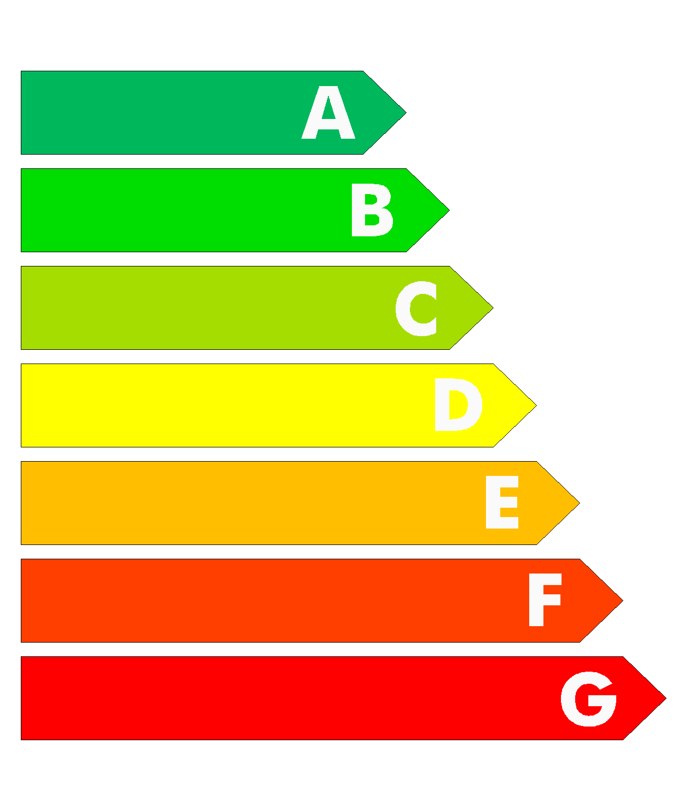

Si realizamos un repaso por todas las actividades que realizamos a lo largo de un día seremos conscientes de que la energía eléctrica está presente en la mayoría de ellas. De ahí la importancia de que seamos conscientes de distintos aspectos a tener en cuenta sobre el consumo de la electricidad. Por un lado, algunas fuentes de energía se agotan, es decir, existen de forma limitada en la naturaleza por lo que se consideran no renovables. Además, el modo de transportar, extraer y consumir esta energía también tiene su impacto en el medioambiente.
Por estos motivos es importante ser conscientes de la importancia de realizar un consumo responsable de la energía, fomentando el ahorro energético para contribuir a conservar el medioambiente y el desarrollo sostenible.
Pero ¿cómo ahorrar energía? Existen numerosas acciones que podemos tener en cuenta para fomentar el ahorro energético, pero las más sencillas se encuentran en pequeños gestos de nuestras rutinas diarias. La modernización de nuestro estilo de vida ha llenado los hogares de electrodomésticos y otros aparatos electrónicos que nos facilitan la vida, pero que debemos aprender a utilizar de una manera eficiente. Cada día son más los electrodomésticos que utilizamos, por ello es importante hacer un uso eficiente de ellos para no desperdiciar energía y causar daños en el medio ambiente. A la hora de elegir un electrodoméstico debemos fijarnos en la etiqueta de eficiencia energética. Así, reduciremos tanto nuestra huella ecológica como el gasto en nuestra factura. ¡Si queres aprender más sobre ahorrar energia dirigite a la seccion de recomendaciones que ya tenemos propuestas para tener en cuenta!
Las etiquetas energéticas
La etiqueta energética de los electrodomésticos nos ofrece datos del fabricante, nos garantiza que el fabricante ha cumplido su parte y ha desarrollado una máquina eficiente. Pero una vez que el electrodoméstico llega a nuestro hogar, la responsabilidad de mantener esa eficiencia está en nuestras manos. El uso del aparato va a tener mucho peso en la huella que dejará en el planeta durante su vida útil. En las instrucciones de los electrodomésticos, tienes una serie de consejos de mantenimiento que debes seguir.

Consecuencias de no ahorrar energia
El mal uso de nuestros electrodomésticos ahonda en la destrucción del mundo donde vivimos. Veamos algunas consecuencias:
Aumento de necesidades energéticas.
El aumento de CO2 hace que aumenten los gases invernadero, que atrapan el calor que llega del sol, no dejándolo escapar.